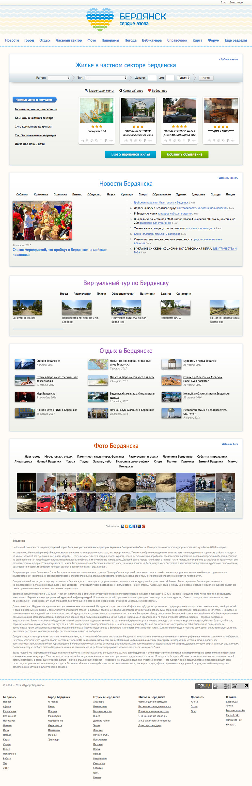

Сайт «Курорта Бердянска»
berdyansk.org.ua →Мной выполнена вёрстка и дизайн всех страниц и разделов.
На сайте собрана информация о городе и курорте Бердянске. Основной направленностью сайта является размещения объявлений о аренде жилья отдыхающими.
Так-же на сайте собрано более 250 панорам Бердянска.
Главная страница сайта на которой собрана последняя информация из главных разделов.
